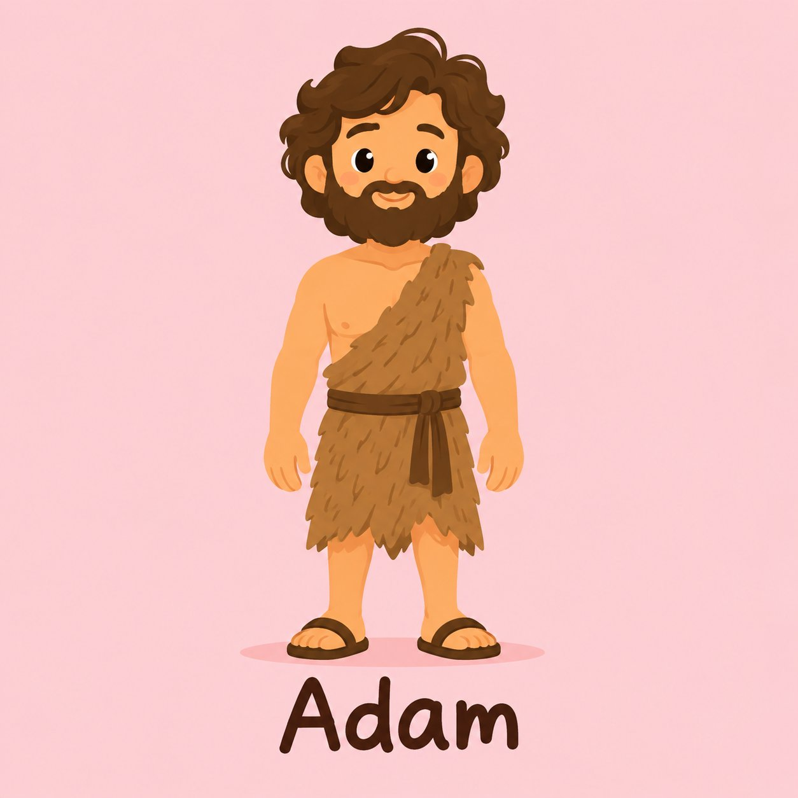

Adam

- Name
- Adam
- Role
- First Man
- Testament
- Old
- Timeline Era
- Primeval / Patriarchs
- Summary
- Adam was the first human being, created by God in His image and placed in the Garden of Eden. He is the father of all humanity and the husband of Eve.
- Key Story
- In Eden Adam received God's command, named the animals, and later ate the forbidden fruit with Eve, bringing sin into the world.
- Key Verses
- Related Books
- Related People
- Life Lesson
- Our story begins with a Creator who made us in His image and for His fellowship. Even after the Fall, God pursued Adam — and He still pursues us with redeeming love.
- Related Places
- Related Events
Awaiting Review Not yet checked against scholarly sources. Treat its claims as provisional until this entry is reviewed. About verification
Last reviewed: not yet reviewed
Life timeline
Timeline events in timeline order, then Bible stories in canonical book order.
- Creation (Genesis 1-2)
- The Fall and Cain and Abel (Genesis 3-4)
- Creation (Genesis 1:1-2:3; Genesis 1-2; Psalm 19:1)
- The Fall (Genesis 3; Romans 5:12-21)
- Cain Murders Abel (Genesis 4; Hebrews 11:4)
Family
Spouse(s)
Children
Grandchildren
Verses mentioning this person
Genesis 2:19Genesis 2:20Genesis 2:21Genesis 2:23Genesis 3:8Genesis 3:9Genesis 3:17Genesis 3:20Genesis 3:21Genesis 4:1Genesis 4:25Genesis 5:1Genesis 5:2Genesis 5:3Genesis 5:4Genesis 5:5Deuteronomy 32:8Joshua 3:161 Chronicles 1:1Job 31:33Luke 3:38Romans 5:141 Corinthians 15:221 Corinthians 15:451 Timothy 2:131 Timothy 2:14Jude 1:14